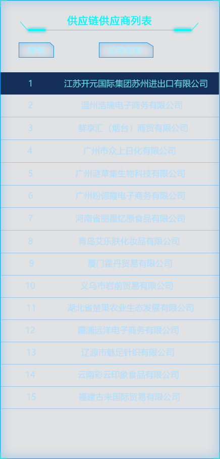
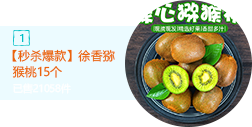
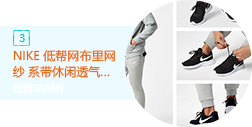

个
个
各品类商品销量趋势
2019/12/18-2019/12/24|过去7天（12-14二）
服饰品类不同商品的转化
2019/12/18-2019/12/24|过去7天（12-14二）
| 商品一级分类 | 商品名称 | 购买次数 | 购买人数 | 总销售额 |
|---|---|---|---|---|
| 护肤品 | 欧莱雅小蜜罐 | 149 | 30 | 20906 |
| 食品 | 养乐多 | 116 | 23 | 14449 |
| 手机数码 | 华为畅享10 | 101 | 20 | 13201 |
| 服饰 | 长袖针织连衣裙 | 94 | 18 | 11595 |
各品类的销售情况
2019/12/18-2019/12/24|过去7天（12-14二）
| 商品一级分类 | 购买次数 | 购买人数 | 销售额 |
|---|---|---|---|
| 护肤品 | 238 | 238 | 143123 |
| 食品 | 226 | 226 | 134801 |
| 手机数码 | 220 | 220 | 129185 |
| 服饰 | 213 | 212 | 136762 |
各品类的访购概况
2019/12/18-2019/12/24|过去7天（12-14二）
| 商品一级分类 | 浏览商品详情页 | 支付订单详情 | 访购比(%) |
|---|---|---|---|
| 护肤品 | 408 | 182 | 44.61% |
| 食品 | 365 | 225 | 61.64% |
| 手机数码 | 359 | 200 | 55.71% |
| 服饰 | 340 | 208 | 61.18% |